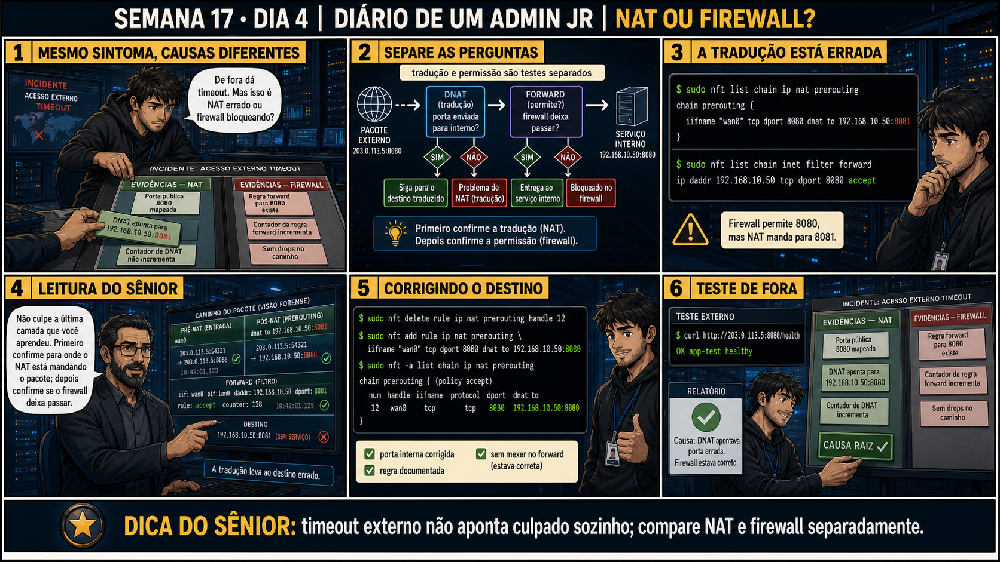

Semana 17 · Dia 4 | Nível Júnior — Redes
NAT ou Firewall?
timeout externo não aponta culpado sozinho; compare NAT e firewall separadamente
ANTES DE ALTERAR, OBSERVE. DEPOIS DE ALTERAR, VALIDE.
1. O chamado
#6672
PRIORIDADE MÉDIA
09:30
aberto por: usuário externo
host: servidor interno publicado · serviço: acesso externo
"De fora dá timeout. Mas isso é NAT errado ou firewall bloqueando?"
Mesmo sintoma, causas possíveis diferentes. Como você compara as duas evidências sem chutar qual delas é a culpada?
💡 Passa o mouse nas palavras destacadas pra ver uma dica rápida — clica se quiser a explicação completa com analogia.
2. Antes de ver as opções — tenta responder
🧠 Recall ativo: quais são as duas perguntas separadas que você precisa responder pra diagnosticar
um timeout externo num serviço publicado?
1) A
tradução (NAT)
está apontando pro destino certo? 2) A
permissão (firewall)
deixa esse tráfego passar? Primeiro confirme a tradução, depois confirme a permissão — nessa ordem, sem
pular nenhuma.
3. Questão comentada — clica numa alternativa
nft list chain ip nat prerouting mostra: dnat to 192.168.10.50:8081. O serviço
real está na porta 8080, não 8081. nft list chain inet filter forward mostra a regra de permissão correta
pra 192.168.10.50:8080. Qual é a causa real do timeout?
💡 Analogia do Sênior para Fixar: O princípio fundamental de 04 NAT OU FIREWALL é como o alicerce de sustentação de um viaduto: garante que a estrutura de comunicação suporte alto tráfego sem colapsar.
4. Decodificador de conceitos
Clica em qualquer termo pra ver a definição completa e uma analogia do dia a dia:
5. Ferramentas e leitura da evidência
| Evidência | Comando | O que revela |
|---|---|---|
| Regra DNAT | nft list chain ip nat prerouting | Pra onde o tráfego está sendo traduzido de verdade. |
| Regra forward | nft list chain inet filter forward | Se existe permissão pro destino traduzido. |
| Contador da regra | nft -a list chain ... | Se a regra específica está sendo usada pelo tráfego real. |
--- evidência NAT ---
$ sudo nft list chain ip nat prerouting
chain prerouting {
iifname wan0 tcp dport 8080 dnat to 192.168.10.50:8081
}
--- evidência firewall ---
$ sudo nft list chain inet filter forward
chain forward {
type filter hook forward priority 0; policy drop;
ip daddr 192.168.10.50 tcp dport 8080 accept
}
--- Firewall permite 8080, mas NAT manda pra 8081. ---
--- correção do destino ---
$ sudo nft delete rule ip nat prerouting handle 12
$ sudo nft add rule ip nat prerouting \
iifname wan0 tcp dport 8080 dnat to 192.168.10.50:8080
--- teste de fora ---
$ curl http://203.0.113.5:8080/health
OK app-test healthy
5.1 O painel 4 da prancha de hoje mostra: "Não culpe a última camada que você aprendeu. Primeiro confirme para onde o NAT está mandando o pacote; depois confirme se o firewall deixa passar"
Um colega, tendo acabado de aprender sobre forward ontem, já quer mexer só nas regras de firewall.
Por que investigar sempre pela ORDEM do caminho do pacote (NAT primeiro, depois
firewall) é melhor do que ir direto pra camada que você aprendeu por último?
💡 Analogia do Sênior para Fixar: Diagnosticar anomalias em 04 NAT OU FIREWALL é como o eletricista usando o multímetro no quadro de disjuntores: mede a passagem de sinal no ponto exato da falha.
5.2 "Se as duas evidências (NAT e firewall) parecerem certas à primeira vista, o problema está em outro lugar?"
Um colega, revisando rapidamente as duas regras, acha que ambas "parecem OK" e já quer procurar outra causa.
Por que revisar as regras com atenção aos detalhes exatos (porta, IP) é mais
confiável do que uma checagem superficial de "parece certo"?
💡 Analogia do Sênior para Fixar: Aplicar as boas práticas de 04 NAT OU FIREWALL é como o protocolo de segurança da aviação: elimina pontos únicos de falha e garante previsibilidade operacional.
6. Procedimento profissional
- Diante de timeout externo num serviço publicado, separe as duas perguntas: NAT e firewall.
- Confirme a regra DNAT primeiro, seguindo a ordem real do caminho do pacote.
- Confirme a regra de forward depois, comparando os valores exatos (IP, porta) com a DNAT.
- Não confie em "parece certo" — compare valor por valor entre as duas evidências.
- Corrija a camada exata que estiver errada, documentando qual era a causa real.
7. Laboratório guiado — marca conforme for testando
Segurança: execute os testes apenas em VM descartável e confirme nomes de discos, hosts e arquivos antes de cada comando.
- Em VM de laboratório, configure DNAT e forward corretamente, confirmando que o acesso externo funciona.$ sudo nft add rule ip nat prerouting \ iifname wan0 tcp dport 8080 dnat to 192.168.10.50:8080 $ sudo nft add rule inet filter forward \ ip daddr 192.168.10.50 tcp dport 8080 accept $ curl http://203.0.113.5:8080/health
🔍 Detalhar esse comando
- iifname wan0 tcp dport 8080 dnat to 192.168.10.50:8080
- Regra de DNAT com a porta pública (8080) e a porta interna real (8080) coincidindo — este é o cenário correto, usado como base antes do erro proposital do próximo passo.
- ip daddr 192.168.10.50 tcp dport 8080 accept
- Regra de forward liberando exatamente o mesmo destino e porta pra onde o DNAT está mandando o tráfego.
Resultado esperado: acesso bem-sucedido, estabelecendo o cenário base saudável (OK app-test healthy).Por quê: ter um cenário base funcionando é o que te permite reconhecer com clareza o que muda depois, quando o erro for introduzido de propósito.Cilada comum: pular direto pro cenário quebrado sem confirmar antes que o cenário base realmente funciona — sem essa referência, fica mais difícil saber se a causa é a mudança recente ou algo que já estava errado. - Deliberadamente altere a porta de destino na regra DNAT pra uma porta diferente da real, sem mexer no forward.$ sudo nft delete rule ip nat prerouting handle 12 $ sudo nft add rule ip nat prerouting \ iifname wan0 tcp dport 8080 dnat to 192.168.10.50:8081 $ curl -m 3 http://203.0.113.5:8080
🔍 Detalhar esse comando
- nft delete rule ... handle 12
- Remove uma regra específica pelo seu handle (identificador numérico) — obtido antes com nft -a list chain, que mostra o handle de cada regra.
- dnat to 192.168.10.50:8081
- Erro proposital: manda o tráfego pra porta 8081, enquanto o serviço real escuta na 80 (e o forward só libera a 8080) — simula o tipo de engano de digitação que acontece de verdade.
Resultado esperado: timeout externo, mesmo com o forward ainda correto.Por quê: reproduz o caso real do sênior: firewall permite a porta 8080, mas o NAT manda pra 8081 — as duas evidências "parecem certas" isoladamente.Cilada comum: depois do timeout, ir direto mexer no forward (a camada aprendida mais recentemente) em vez de seguir a ordem real do caminho do pacote — NAT primeiro, depois firewall. - Compare as duas regras (nat prerouting e filter forward) lado a lado, valor por valor.$ sudo nft list chain ip nat prerouting $ sudo nft list chain inet filter forward
🔍 Detalhar esse comando
- nft list chain ip nat prerouting
- Mostra a regra de DNAT atual — pra onde o tráfego está sendo traduzido de verdade (aqui, :8081).
- nft list chain inet filter forward
- Mostra a regra de permissão atual — qual porta o firewall realmente libera (aqui, :8080). Comparar as duas lado a lado revela a divergência.
Resultado esperado: divergência identificada entre a porta do DNAT (8081) e a porta do forward (8080).Por quê: comparar valor por valor, não só "a regra existe", é o que revela um erro de detalhe fácil de passar despercebido numa leitura rápida.Cilada comum: ler as duas regras rápido demais e concluir "as duas parecem certas" sem comparar o número exato da porta em cada uma.🧑🏫 Aqui entra o Mentor (em breve): se as portas coincidirem mas o acesso ainda falhar, este é o ponto onde o chat com o Sênior-IA vai ajudar a investigar se o serviço realmente está escutando na porta esperada. - Corrija a regra DNAT pra porta correta e teste de novo o acesso externo.$ sudo nft delete rule ip nat prerouting handle 12 $ sudo nft add rule ip nat prerouting \ iifname wan0 tcp dport 8080 dnat to 192.168.10.50:8080 $ curl http://203.0.113.5:8080/health
🔍 Detalhar esse comando
- delete rule ... handle 12
- Remove a regra com o destino errado (:8081) antes de adicionar a corrigida — nft não permite duas regras conflitantes fazendo o mesmo "match" sem gerar ambiguidade.
- dnat to 192.168.10.50:8080
- Agora a porta interna volta a bater com a porta que o forward já liberava (8080) — as duas evidências finalmente concordam.
Resultado esperado: acesso restaurado, confirmando a causa real (OK app-test healthy).Por quê: corrigir só a regra realmente errada (o DNAT) confirma a causa raiz — se você tivesse mexido no forward, o teste continuaria falhando.Cilada comum: corrigir os dois lugares (NAT e forward) "por garantia" — isso mascara qual era a causa real e pode deixar uma regra de forward genérica demais no ambiente. - Documente a causa exata (NAT com porta errada, não firewall) — reproduzindo o painel 6 da prancha de hoje.Resultado esperado: registro claro atribuindo a causa à camada certa.Por quê: documentar a causa exata (não "mexi em NAT e firewall até funcionar") é o que ensina o próximo colega a investigar pela ordem certa, em vez de culpar a camada aprendida por último.
8. Validação e encerramento
- As regras de NAT e firewall foram comparadas separadamente, valor por valor.
- A ordem de investigação seguiu o caminho real do pacote (NAT antes de forward).
- A causa foi atribuída à camada certa, com evidência exata, não achismo.
- A correção foi aplicada só na regra realmente errada.
Rollback e limites
Corrigir uma regra DNAT (delete + add com o valor certo) é reversível, desde que
você tenha anotado a configuração original antes de mudar. O cuidado real é nunca comparar regras "de
memória" — sempre ler o valor exato de cada uma antes de concluir qual está errada.
💡 Sobre repetição espaçada: "não culpe a última camada aprendida" conecta
com a Semana 13 (não confundir causa mais recente com causa real) — mesma disciplina de investigar pela
ordem do sistema, não pela ordem do seu aprendizado. O Anki vai conectar os dois.
9. Resposta final
Alternativa correta: A. Nesta aula, a causa certa foi DNAT apontando
pra porta errada, mesmo com o forward correto. O ponto central do caso é este: timeout externo não
aponta culpado sozinho; compare NAT e firewall separadamente.
🔓 O que você desbloqueou hoje
Capacidade de diagnosticar com precisão entre NAT e firewall quando o sintoma é
o mesmo. Amanhã fecha a Semana 17 com um checklist de teste ponta a ponta — validando um port forward do
jeito que o usuário real vai usar, não por um atalho que pode mentir sobre o resultado.